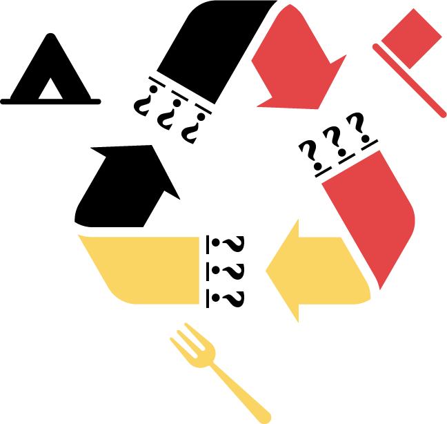
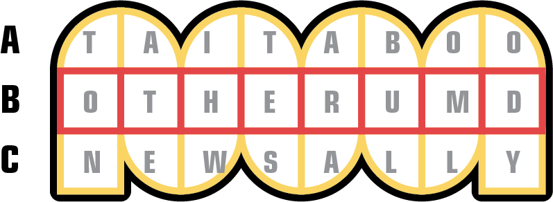
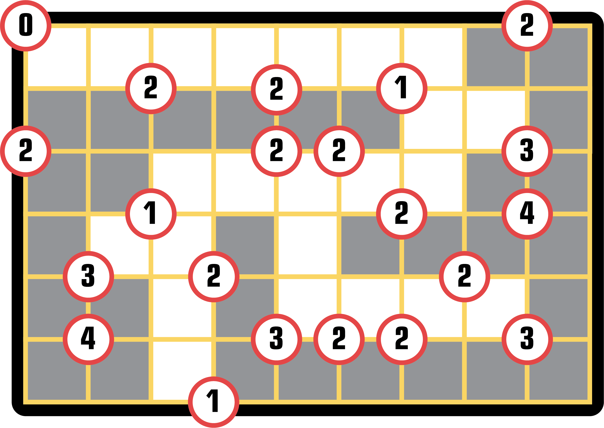
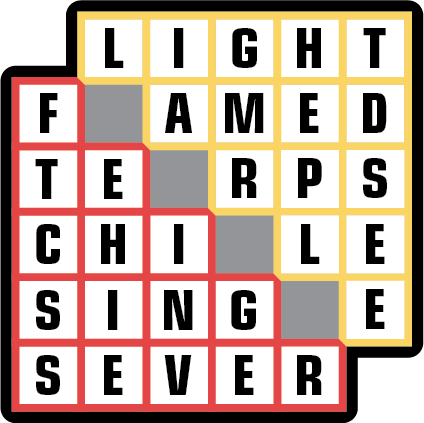
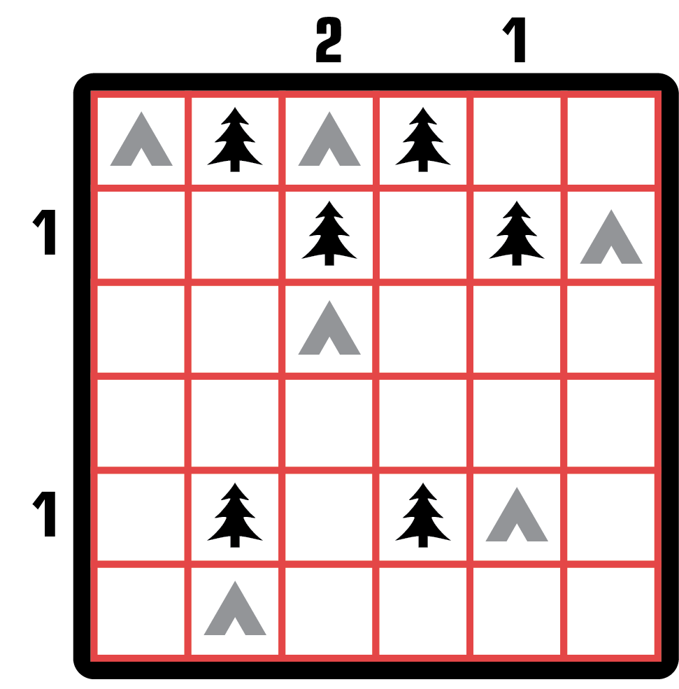
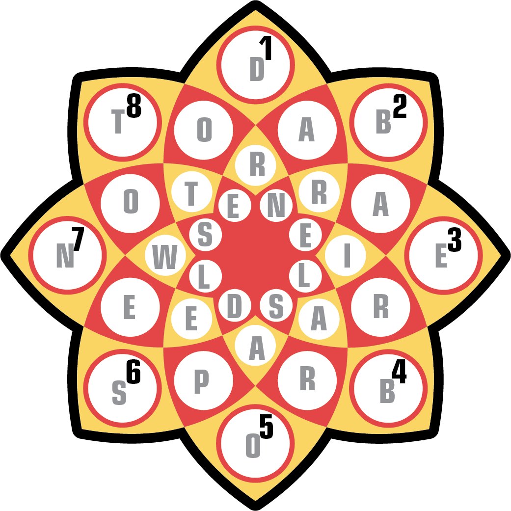
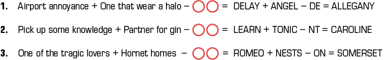
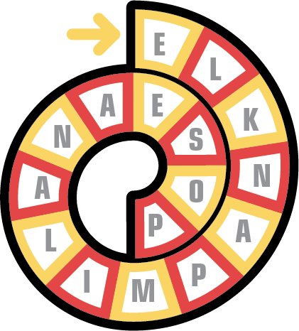

Solution: Recycled
Answer: INSIDEJOB
Written by Dawson Do
There is no puzzle content when you first open the puzzle page. Instead, I invite you to search for a puzzle I wrote for the UMD student newspaper, The Diamondback. Going to the January 1st daily crossword page, you will find a puzzle set titled: “Recycled.” There’s an image of a recycle symbol and a small variant crossword. Solve the grid and the middle row says: OTHER UMD


There are no other puzzle content to find on The Diamondback, but with some searching, you will find that I published three sets of puzzles with the University of Minnesota Duluth's student newspaper, The Bark. Each set comes with two small puzzles. The solutions are presented below.



The only unused element is the recycle symbol found on The Diamondback’s puzzle page. Along with the “repair” in the flavortext, the next step is to combine two puzzles from different sets to extract. The three images suggest the mechanic used for each pair. Each pair yields three letters, suggested by the question marks on the recycle symbol.
- The Spiral string is the same length as the Creek path. Extracting the letters that align with the forks gives: INS
- The Tents puzzle and Shapeshifter grid are the same size. Overlaying the two and taking the letters that align with the tents gives: IDE
- The leftover letters in the Scramble all appear on the outer edges of the Flower. Using semaphore to decode each bigram gives: JOB
These letters spell out the answer: INSIDE JOB
Author’s Notes
This puzzle was inspired by Eric Berlin’s Puzzlesnacks. I liked the idea of a lot of many digestible puzzles coming together as one.
It is very common for Terps to search for “UMD” in Google and get results for the University of Minnesota Duluth instead. Originally, I thought to hide some puzzles in different University of Maryland publications, but (this should sound familiar) I thought I’d be much funnier if I could pull off a University of Minnesota Duluth collaboration. Hiding a puzzle inside The Bark (and The Diamondback) was pretty ambitious, and I’m happy it all worked out! Special thanks to Daisy, the editor at The Diamondback and the staff at The Bark, especially Bailey, for publishing the subpuzzle sets for this puzzle.